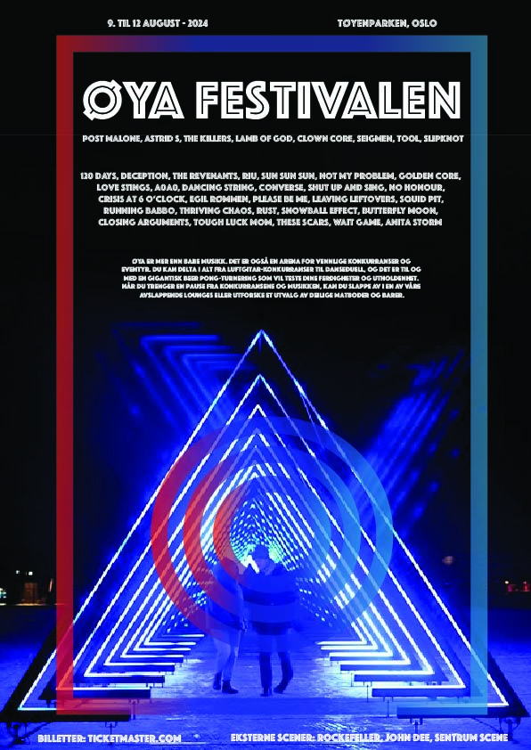
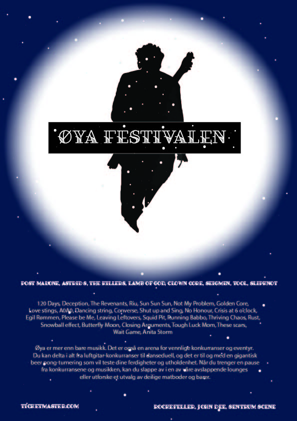

Welcome to Hüseyin's portfolio
About me
Hello! I am Hüseyin Özdemir, 17 year old student at
Fyrstikkalleen collage in Oslo, Norway. I am born in Norway, with Turkish
nationality. I really enjoy writing screenplays and editing what I have
produced in school, in my spare time. We have a large TV studio at my
school and in some projects I use the various parts of the studio. From
time to time I set up the studio, change the lighting, check if the sound
is good from the sound mixer and mix between cameras from the camera mixer.
Take a look at some of mye projects.
TWISTED short movie
Video of Stovner
Documentary of Ella Marie
Nissestua trailer
Chance to Change short movie
Revy audition - one minute short movie
Sound design trailer
Øya Festivalen poster


I was given a school assignment to make posters for the Øya Festival.
F21 Invaders
After Life - Trailer